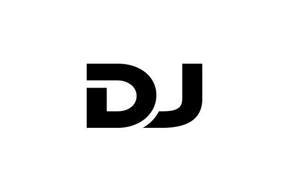

 Dj2Fly
25/01/2023
Equipo:
Maximiliano Paz, Santiago Robles, Santiago Muñoz, Jose Miguel Pardo, Juan Pablo Del Hoyo
Quienes Somos?
DJ2Fly es una empresa de DJs que se dedica a tocar en antros y a representar a diferentes DJs. Fundada en el año 20XX, DJ2Fly se ha convertido rápidamente en una de las empresas más populares en la escena de la música electrónica. Con un equipo de DJs talentosos y apasionados, DJ2Fly ofrece una experiencia de fiesta inolvidable para sus clientes. La empresa se especializa en tocar en antros y clubs, lo que les permite llegar a una audiencia amplia y diversa. Los DJs de DJ2Fly tienen una gran variedad de estilos musicales, desde el house hasta el techno, lo que les permite adaptarse a cualquier tipo de evento. Además, la empresa cuenta con una gran cantidad de equipos y tecnología de última generación, lo que les permite proporcionar un sonido de alta calidad. Otra de las principales ventajas de DJ2Fly es su capacidad para representar a diferentes DJs. Esto les permite a los clientes contratar a los mejores DJs del mercado para sus eventos. La empresa tiene una gran cantidad de contactos en la industria de la música electrónica, lo que les permite traer a los mejores DJs a sus eventos. En conclusión, DJ2Fly es una empresa de DJs que se dedica a proporcionar una experiencia de fiesta inolvidable para sus clientes. Con un equipo de DJs talentosos y apasionados, una gran variedad de estilos musicales, y la capacidad de representar a diferentes DJs, DJ2Fly es una excelente opción para cualquier evento de música electrónica.